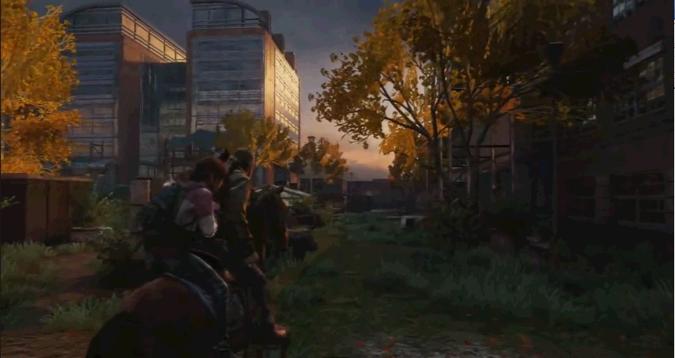

содержание
Университет
Университет
Глава
Глава

Сезон: Осень
Подглавы:
Гаудеамус,
Научный центр
Персонажи:
Джоэл, Элли
Мультиплеер
Артефакты:
9
Учебники:
2
Комиксы:
1
Медальоны «Цикад»:
5
Хронология
Предыдущая глава:
Дамба Томми
Следующая глава:
Озёрный курорт
«Университет» - восьмая глава в Одни из Нас (англ. The Last of Us).
Элли и Джоэл объезжают корпус университета на лошади в поиске Исследовательского центра, который, согласно Томми, выглядит как "огромное зеркало". Элли называет лошадь "Мозоль", так как Джоэл не уточнил ее имя у своего брата. Во время поиска, Джоэл все больше рассказывает о своем прошлом. О том, как в детстве он мечтал стать певцом, о том, что он не закончил колледж из-за раннего брака и беременности жены. Они также затронули тему американского футбола. Углубляясь в территорию университета, главные герои выражают беспокойство по поводу того, что они до сих пор не обнаружили ни одного члена «Цикад». Единственные живые существа, на которых они наткнулись, были лабораторные макаки. Джоэл и Элли также беспокоятся, что уж слишком много заражённых обитает в опасной близости от исследовательского центра, но пытаются найти в этом логический ответ, мотивируясь тем, что Билл использовал зараженных, как средство защиты от незваных гостей.
Не успев обсудить дальнейшие действия, их обнаруживает группа мародеров. Отбиваясь, один из них нападает на Джоэла у перил, которые не выдерживают их, срываясь вниз. К несчастью, Джоэл падает на длинный торчащий из земли кусок арматуры, который протыкает его на сквозь в районе туловища. Элли помогает тяжелораненому Джоэлу выбраться и проводить его до выхода, где находится их конь. Они взбираются на Мозоль и уносятся прочь. Но по пути Джоэл теряет сознание и падает с лошади. Элли пытается привести его в чувства, но безуспешно. Теперь Элли должна позаботиться о выживании.
Глава «Университет» содержит следующие предмет коллекционирования:
Сюжет
Гаудеамус
Элли и Джоэл объезжают корпус университета на лошади в поиске Исследовательского центра, который, согласно Томми, выглядит как "огромное зеркало". Элли называет лошадь "Мозоль", так как Джоэл не уточнил ее имя у своего брата. Во время поиска, Джоэл все больше рассказывает о своем прошлом. О том, как в детстве он мечтал стать певцом, о том, что он не закончил колледж из-за раннего брака и беременности жены. Они также затронули тему американского футбола. Углубляясь в территорию университета, главные герои выражают беспокойство по поводу того, что они до сих пор не обнаружили ни одного члена «Цикад». Единственные живые существа, на которых они наткнулись, были лабораторные макаки. Джоэл и Элли также беспокоятся, что уж слишком много заражённых обитает в опасной близости от исследовательского центра, но пытаются найти в этом логический ответ, мотивируясь тем, что Билл использовал зараженных, как средство защиты от незваных гостей.
Научный центр
Войдя в исследовательский центр, главные герои узнают, что «Цикады» давно покинули данное место, причем в спешке. Джоэл находит диктофон возле трупа ученого, по записи которого узнает, что подопытные обезьяны использовались для поиска вакцины. На приказы уничтожить объекты опытов, ученый, напротив, пытается освободить их, но получает укус, заразившись тем самым инфекцией. По записи Джоэл и Элли узнают, что нынешнее расположение «Цикад» - в Солт-Лейк-Сити, штат Юта.Не успев обсудить дальнейшие действия, их обнаруживает группа мародеров. Отбиваясь, один из них нападает на Джоэла у перил, которые не выдерживают их, срываясь вниз. К несчастью, Джоэл падает на длинный торчащий из земли кусок арматуры, который протыкает его на сквозь в районе туловища. Элли помогает тяжелораненому Джоэлу выбраться и проводить его до выхода, где находится их конь. Они взбираются на Мозоль и уносятся прочь. Но по пути Джоэл теряет сознание и падает с лошади. Элли пытается привести его в чувства, но безуспешно. Теперь Элли должна позаботиться о выживании.
Коллекционные материалы
Глава «Университет» содержит следующие предмет коллекционирования:
- Артефакты - 9
- Журнал снайперской базы - на втором этаже корпуса, путь к которому можно проделать через гараж, где находится верстак.
- Записка на стене - рядом с панелью управления воротами, где Джоэлу необходимо зачистить помещения от зараженных и запустить генератор.
- Карта университетского кампуса - перед вторыми запертыми воротами, которые необходимо запустить через генератор, пройдя через отверстие в дверном проеме, заваленное мебелью, на стойке рецепции.
- Дневник студента - в комнате 202 общежития на втором этаже, в выдвижном шкафу.
- Газетная вырезка - после выхода из зоны, заполненой спорами и зараженным, в комнате 209.
- Диктофон из кабинета - на столе третьего этажа исследовательского центра, рядом с фотографией женщины с собакой.
- Снимок грибка - после прохода через завешанный ширмами коридор, с левой стороны офиса на столе.
- Диктофон из лаборатории - в комнате, где герои встретят обезьян, в центре комнаты, с правой стороны.
- Диктофон «Цикады» - сюжетный артефакт, невозможно пропустить. Около трупа ученого.
- Медальоны Цикад - 5
- Хоуп Пино (000318) - на ветке дерева в районе небольшого дворика, напротив разрушенной стены, по правую сторону.
- Алекс Рохнер (000260) - прежде чем спрыгнуть через ограду на большую площадь с фонтаном и статуей, с правой стороны будет разбитое окно с доступом на второй этаж. Медальон в помещении на столе.
- Джо Уоррен (000310) - на Топляке в общежитии, которого необходимо сначала убить. На низком уровне сложности этот топляк отсутствует, что делает невозможным получение этого медальона.
- Эрик Григгс (000111) - в одной из заброшенных палаток, расположенные у центрального входа в исследовательский центр.
- Сэйди Пёрл Хикман (000231) - в помещении, где герои встретят обезьян, в дальнем правом конце комнаты на стеллаже под микроскопом.
- Справочники - 2
- Справочник по медицине, том 2 - попав на большую площадь, где герои и встретят обезьян, необходимо держаться правой стороны. В том районе будет навес с доступом в помещения. Необходимо подняться на второй этаж, и там, в помещении общежития, на столе и будет находится справочник.
- Справочник по коктейлям Молотова, том 2 - за запертой дверью исследовательского центра на вотором этаже.
- Комиксы - 1
- Дикие Звезды: Свободные радикалы - после начала главы, необходимо развернуться и добежать до конца карты. Комикс находится на капоте внедорожника.
Необязательные разговоры
- Далее по дороге от гаража, с левой стороны у большого банера на кирпичной стене здания.
- Необходимо пробежать за здание, которое находится за статуей, при въезде на площадь. Там на стене можно увидеть символ Цикад.
- На лестничной площадке исследовательского центра, у груда оборудования с бумагами.
Запертые двери
- Взобравшись в исследовательское здание университета, необходимо выйти в коридор и следовать ему до тупика, где, с правой стороны, будет дверь.